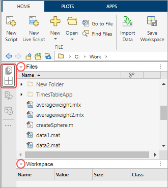
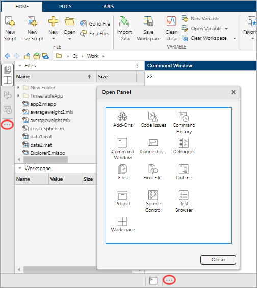
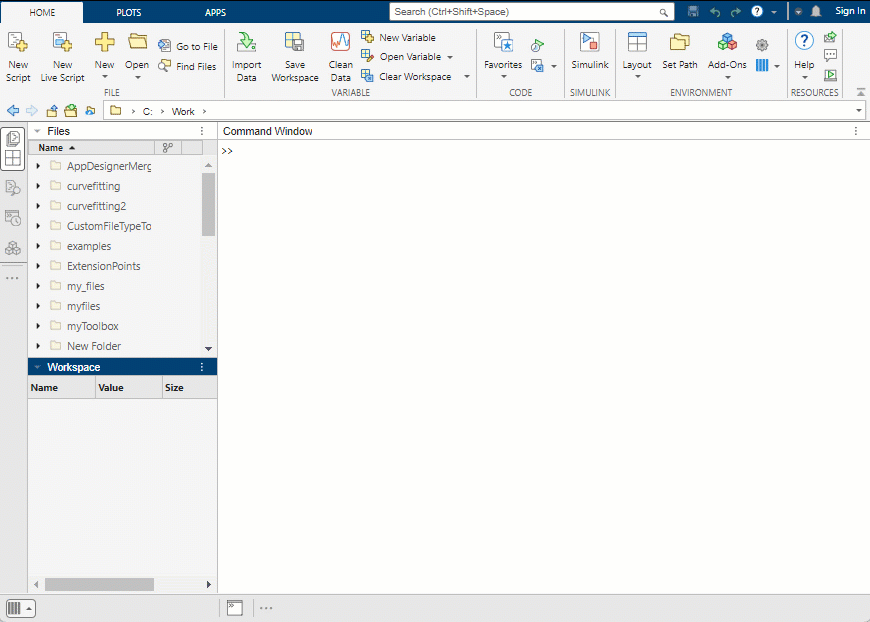
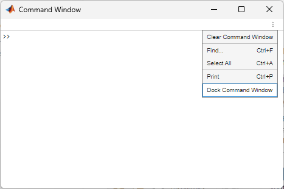
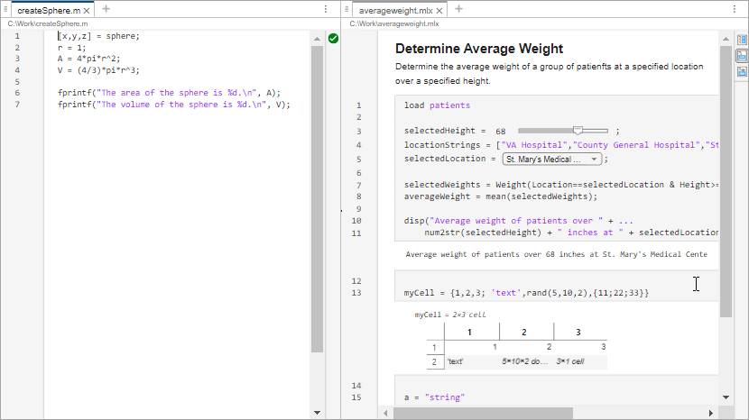
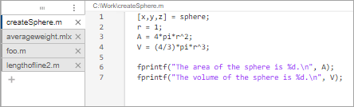
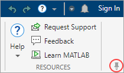

Configure the Desktop
By default, the MATLAB® desktop is configured to optimize a wide range of workflows. You can customize the desktop to better meet your needs by adjusting the layout.
Default Desktop Layout
When you first start MATLAB, the desktop appears in its default layout, which is optimized for a wide range of workflows. The desktop has a two-column layout, with the Files panel and Workspace panel on the left, the Command Window on the right, and the toolstrip across the top. Sidebars on the left and bottom of the desktop show the tools that are docked in the desktop.
You can use the sidebars to access the desktop tools in panels and change the desktop layout.
To restore the default desktop layout, go to the Home tab, and in the Environment section, select Layout > Two Column (Default).

Show and Hide Panels
To show or hide a panel, click its icon on the sidebar. To collapse a single panel within a group, click the arrow on the left side of its title bar.

Open More Panels
To open a panel that is not already open, click the Open more panels button on any sidebar. Then, in the Open Panel dialog box, select from the available panels. Alternatively, you can show common panels by going to the Home tab and, in the Environment section, clicking the Layout button. Then, in the Layout Options section, select one or more of the options in the list.

Group and Move Panels
You can group panels so that you can show or hide them at the same time. Group panels by dragging one panel icon next to another.
To move a panel, drag the panel's title bar or sidebar icon to the left, right, or bottom of the desktop. For example, you can move the Workspace panel to the right side of the desktop by dragging the Workspace panel's title bar towards the right sidebar. You can then move the Workspace panel back to its original location by dragging the Workspace panel icon from the right sidebar to the Files panel icon on the left sidebar.
You can also move the Command Window and Find Files panel to the center of the
desktop, as a document tab. For example, to move the Command Window to the center of
the desktop, click the Command Window actions button  at the top right of the Command Window and select Move Command Window > Center.
at the top right of the Command Window and select Move Command Window > Center.

Undock Panels and Documents
To open a panel in a separate window, undock the panel. You can undock the Find Files panel, Command Window, Editor, and Live Editor. You also can undock the Variables editor and figures.
For example, to undock the Command Window, click the Command Window actions button
 at the top right of the Command Window and select
Undock Command Window. The Command Window opens in a
separate window. To dock the Command Window, select Dock Command
Window.
at the top right of the Command Window and select
Undock Command Window. The Command Window opens in a
separate window. To dock the Command Window, select Dock Command
Window.

You also can undock individual documents, such as an open file in the Editor. For
example, to undock the file myfile.m open in the Editor, click
the Document actions button  at the top right of the Editor and select
Undock myfile.m. To dock the document, click the Dock
button at the top right of the window.
at the top right of the Editor and select
Undock myfile.m. To dock the document, click the Dock
button at the top right of the window.

Reorder and Tile Documents
When you open MATLAB documents, they appear in the associated tool, such as the Editor or Variables editor. Individual documents open as separate tabs within the tool. To view a list of the files open in the tool, click the down arrow to the right of the tabs.
To reorder open documents within a tool, drag the document tabs to a different
position. To reorder document tabs alphabetically, on the title bar of the tool,
click the Document actions button  and select
Alphabetize.
and select
Alphabetize.
To tile open documents, click the Document actions button
 , click Tile All, and
then select a tile option. For example, to view two code files side by side, click
the Document actions button
, click Tile All, and
then select a tile option. For example, to view two code files side by side, click
the Document actions button  and select Tile All > Left/Right. To move a tiled document, drag the document tab to another area. If
you drag it to an area that already contains a document, the document you are
dragging covers up the other document.
and select Tile All > Left/Right. To move a tiled document, drag the document tab to another area. If
you drag it to an area that already contains a document, the document you are
dragging covers up the other document.

To change the position of the tabs from their default location at the top of a
document, click the Document actions button  , click Tab Position, and
select from the available options. For example, select Tab Position > Left to move the tabs to the left of the documents.
, click Tab Position, and
select from the available options. For example, select Tab Position > Left to move the tabs to the left of the documents.

Minimize Toolstrip
To minimize the MATLAB Toolstrip, at the lower-right corner of the toolstrip, click the Minimize Toolstrip button . The toolstrip minimizes, but its tabs remain visible. To restore the toolstrip, click one of the tabs and then, in the lower-right corner of the toolstrip, click the Restore Toolstrip button .

Save Desktop Layout
When you end a session, MATLAB saves your current desktop layout. So, the next time you start MATLAB, the desktop looks them same.
To save a layout for future use, go to the Home tab, and in the Environment section, select Layout > Save Current Layout. MATLAB stores all layouts in the settings folder. To open or manage saved layouts, click Layout and select your saved layout or right-click to delete or rename it.
Some tools, like the Variables editor, do not reopen automatically, even if they were open at the end of your last session. To open specific tools at startup, use startup options. For more information, see Specify Startup Options.
Restore Default Desktop Layout
After changing the desktop layout, you can restore the desktop to its default layout. Go to the Home tab, and in the Environment section, select Layout > Two Column (Default).
Customize Quick Access Toolbar
The quick access toolbar provides access to frequently used operations, or items. This toolbar is located at the top-right corner of the MATLAB desktop and is always visible, even when you navigate between different MATLAB Toolstrip tabs.
To add a toolstrip item to the quick access toolbar, right-click the item and then select Add to Quick Access Toolbar. You also can select from a list of common controls by going to the quick access toolbar and clicking the Common Controls button . To remove a control from the quick access toolbar, right-click the control and select Remove from Quick Access Toolbar. To arrange controls in the quick access toolbar, drag them to the desired locations.